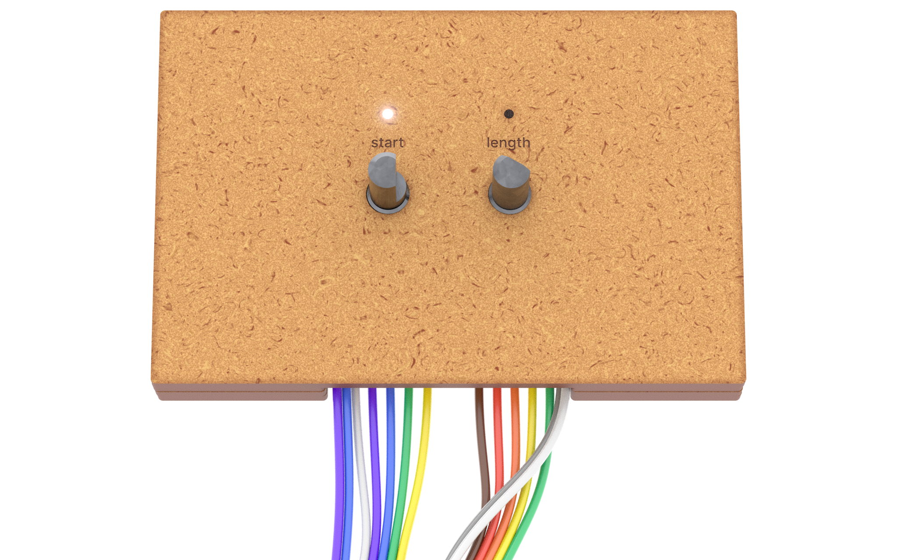

As a UX/UI designer with a passion for physical product design, 3D design, music production, and
embedded electronics, I’ve explored various creative disciplines over the years. Through multiple design
projects, I’ve discovered that my true passion lies in the latter stage of the design process - when concepts
transition into tangible designs, and the physical form starts to emerge. I enjoy experimenting with
materials, shapes, sizes, tactile qualities, and aesthetics, and I feel most fulfilled when an idea becomes
something that can be seen, touched, and experienced.
projects

Audio sampler
This project successfully developed a functional audio sampler, similar to commercial models, while
providing insights into their design and functionality. Although the prototype closely resembles
existing products, it helped uncover the rationale behind common design choices, which are often
undisclosed by manufacturers. Through testing multiple interfaces, I identified the most effective
interactions for sample recording, manipulation, and playback. Additionally, the project deepened my
understanding of real-time audio processing, embedded electronics, and interaction design, revealing the technical complexities involved.


hard skills
Figma
Blender
FreeCAD
Logic Pro X
Arduino
Raspberry Pi
EasyEDA
HTML
CSS
Adobe Illustrator
Adobe Photoshop
Adobe InDesign
JavaScript
TypeScript
Flutter
C
Dart
PHP
SQL
Git